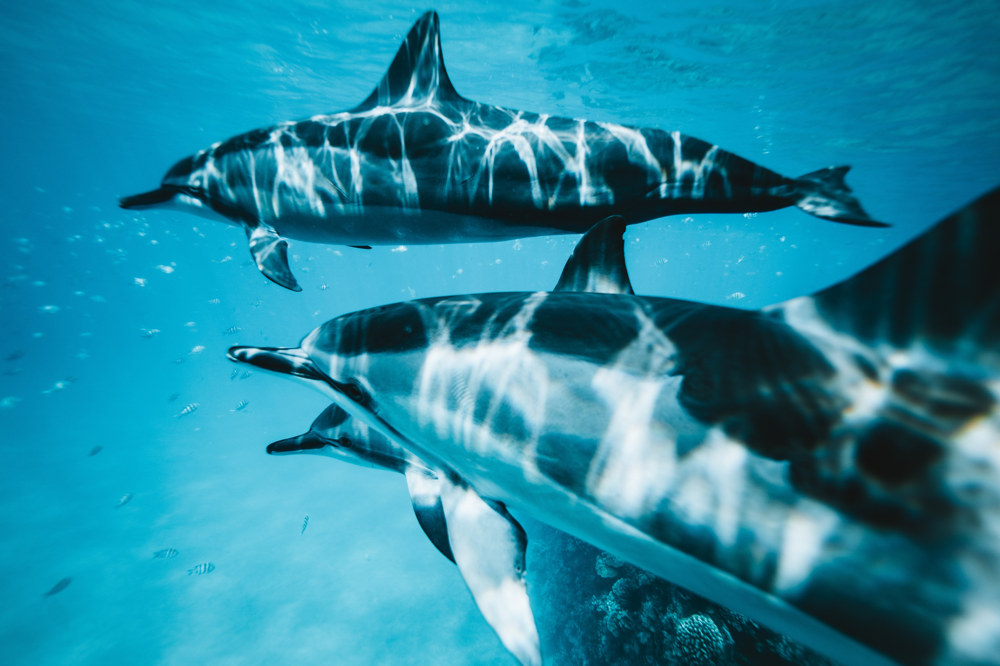
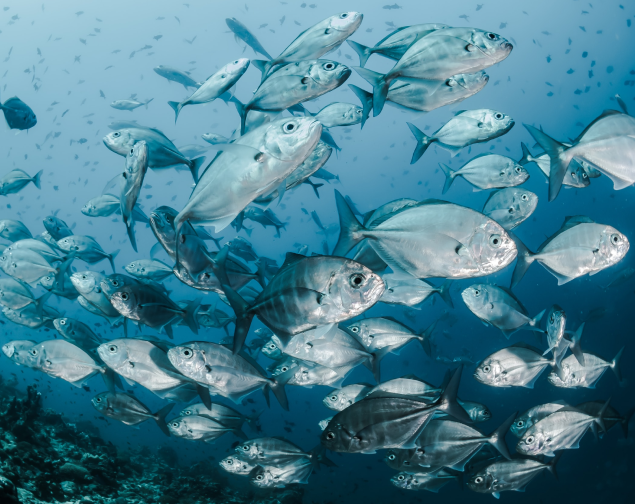

Marine Mammals
Dolphins, whales, sea otters and other marine mammals capture the imagination and demand the affections of people around the world. Many of these marine animals adhere to complex social systems and exhibit remarkable intelligence.
Learn More

Ocean Fish
Some estimates report the world's oceans are home to 20,000 species of fish. Ocean fishes come in all shapes, sizes, colors and live in drastically different depths and temperatures. Despite this diversity, the United Nations Food and Agriculture Organization reported in 2016 that 89.5% of fish stocks are fully fished or overfished.
Learn More